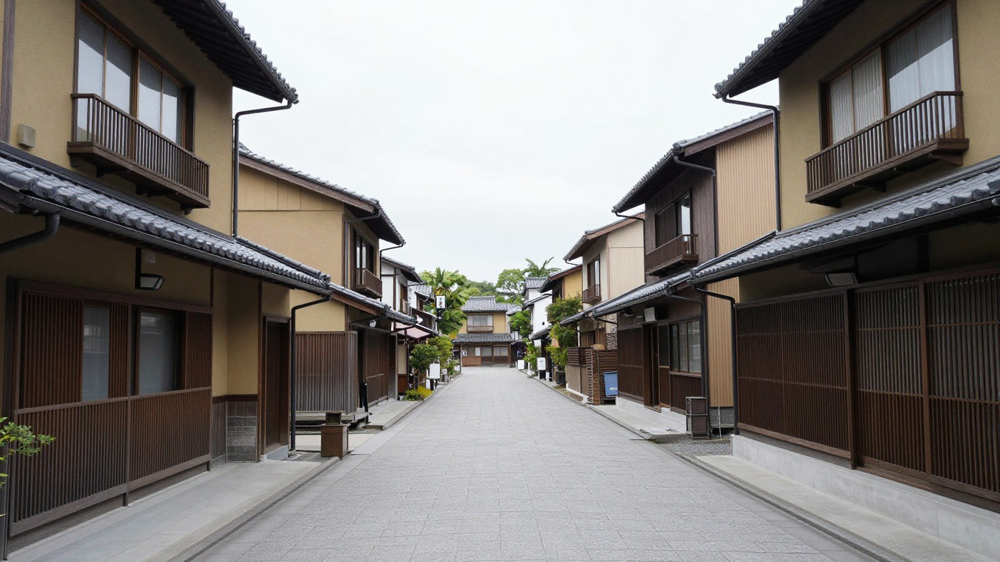

この制度は、一時的な業況悪化から中長期的な回復が見込まれる方を対象としており、融資限度額は7,200万円まで設定されています。ただし、審査の結果、希望に沿えない場合があるため、具体的な条件を確認することが重要です。
セーフティネット貸付(経営環境変化対応資金)とは
日本政策金融公庫が提供する「経営環境変化対応資金」は、一般的にセーフティネット貸付として知られています。この制度は、社会的・経済的環境の変化などをきっかけに、一時的に売上の減少など業況が悪化している方を対象としています。ただし、中長期的には業況が回復し、発展することが見込まれる方が対象となります。
最近の決算期や直近の売上高が、前期や前々期、あるいは前年同期などと比べて5%以上減少している場合が対象の例として挙げられています。また、純利益額や売上高経常利益率が悪化している方、取引条件が0.1か月以上悪化している方も対象の例に含まれます。
融資限度額は7,200万円です。返済期間は、設備資金が20年以内、運転資金が10年以内で、うち据置期間は3年以内となります。利率は基準利率が適用され、条件により特別利率が適用される場合があります。担保や保証人は相談のうえ決まり、経営者保証免除特例制度を併用できる場合があります。審査の結果、希望に沿えない場合がある点に留意が必要です。
対象になる「売上5%減」などの条件
セーフティネット貸付の対象となるのは、社会的・経済的環境の変化などにより一時的に売上の減少などの業況悪化をきたしているが、中長期的には業況が回復し発展することが見込まれる方です。具体的には、最近の決算期の売上高が前期または前々期に比べ5%以上減少している方が挙げられます。また、最近3か月の売上高が前年同期または前々年同期に比べ5%以上減少し、今後も減少が見込まれる方も対象の例に含まれます。さらに、純利益額または売上高経常利益率が悪化している方、取引条件が0.1か月以上悪化している方も対象の例として挙げられています。これらの条件はあくまで例示であり、実際の適用可否は個別の状況によって判断されます。売上の減少だけでなく、利益率の低下や取引条件の悪化といった複合的な要因が考えられる場合もあります。ご自身の事業状況がこれらの例に当てはまるかどうかを確認し、必要に応じて専門的な相談窓口へ問い合わせることをお勧めします。

借りられる金額・返済期間・利率
日本政策金融公庫の経営環境変化対応資金（セーフティネット貸付）を利用する場合、融資の限度額は7,200万円まで設定されています。この枠組みの中で、資金の用途に応じて返済期間が異なります。具体的には、設備資金については20年以内、運転資金については10年以内の範囲で返済期間を定めることができます。また、これらの期間のうち、据置期間（返済の猶予期間）は3年以内とされています。
利率については、基準利率が適用されるのが基本ですが、特定の条件を満たす場合には特別利率が適用される場合があります。担保や保証人の有無、あるいは経営者保証免除特例制度の併用可能性など、個別の状況に応じて融資条件が調整されるため、一律の数字で決まるわけではありません。
なお、審査の結果、希望する条件に沿えない場合がある点に注意が必要です。最終的な融資可否や条件は、申請者の具体的な事業状況や財務内容に基づいて判断されます。したがって、事前に詳細なシミュレーションを行い、自社の資金繰りに合った返済計画を立てることが重要です。
担保・保証人と経営者保証免除特例
セーフティネット貸付を利用する際、担保や保証人の有無は相談を通じて決まります。必ずしも不動産などの担保が必要とは限らず、保証人を立てる場合もあれば、不要な場合もあります。具体的な要件は、申請者の事業内容や返済計画、信用状況などによって異なるため、一概には言えません。
また、経営者保証免除特例制度を併用できる場合があります。この制度は、経営者個人が保証人になることを免除する仕組みです。事業の継続性が認められ、一定の条件を満たす場合に適用されます。適用されれば、経営者個人の資産が直接リスクにさらされる可能性を低減できる点が特徴です。ただし、この特例が適用されるかどうかは、審査の結果次第です。
担保や保証人、特例の適用可否は、すべて個別の審査で判断されます。希望に沿えない場合もあるため、事前の相談が重要です。
申し込み前に知っておきたい注意点
日本政策金融公庫のセーフティネット貸付は、社会的・経済的環境の変化などで一時的に売上の減少など業況悪化をきたしているが、中長期的には業況が回復し発展することが見込まれる方を対象としています。しかし、この制度を利用できるのは、あくまでこうした条件に当てはまる場合に限られます。
また、審査の結果、希望に沿えない場合があります。そのため、事前の相談を通じて、自社の状況が対象となるかどうかを確認することが重要です。さらに、担保や保証人の有無は相談のうえ決まり、経営者保証免除特例制度を併用できる場合もあります。これらの条件は個別の状況によって異なるため、一概には言えません。
資金繰りが苦しくなり始めた際には、早めに専門機関に相談し、自社の現状を正確に把握することが大切です。制度の活用を検討する際は、単に数字だけでなく、自社の事業計画や将来の見通しを整理しておくことが、スムーズな審査につながります。
本記事は一般的な制度の説明です。個別の事情は司法書士・弁護士・税理士などの専門家にご確認ください。最終確認日: 2026年11月11日